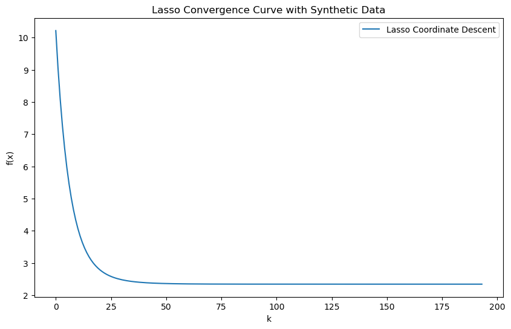
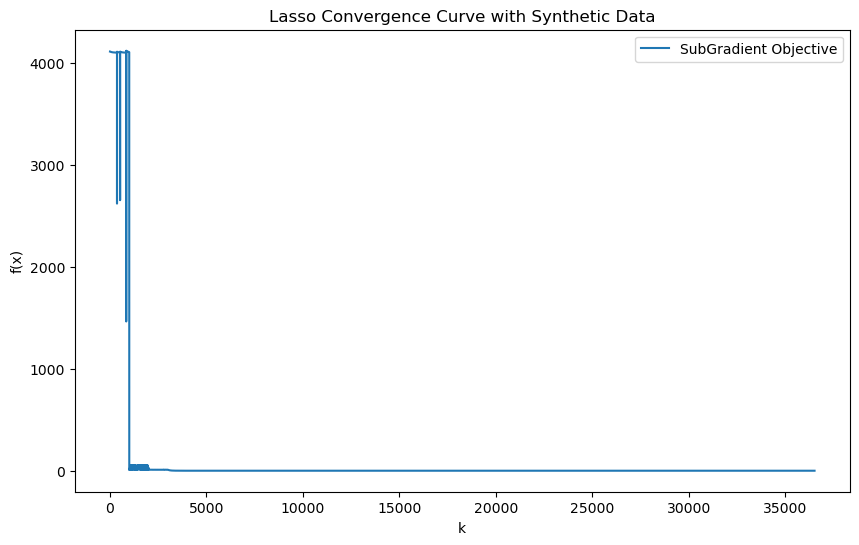
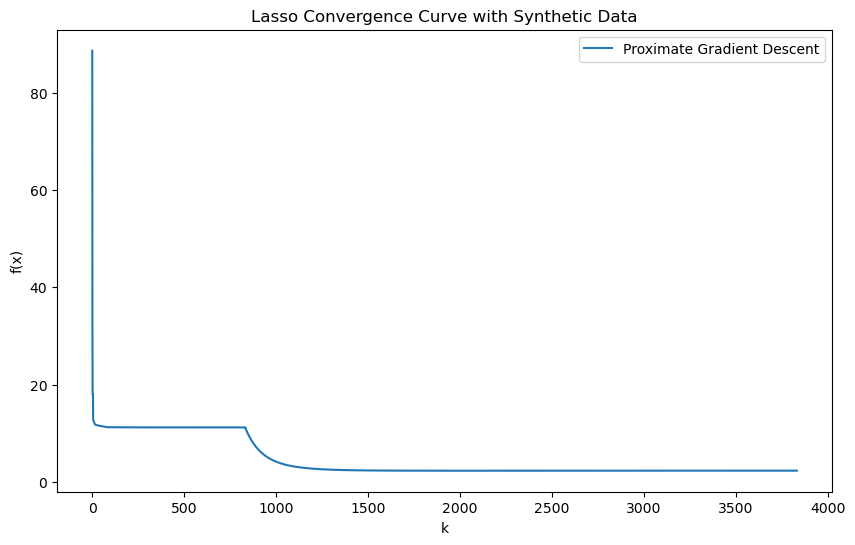
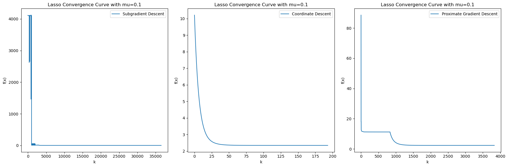

import numpy as np
from sklearn import preprocessing
from sklearn.metrics import r2_score
import matplotlib.pyplot as plt
import time3 Code of Project
class LassowithCG:
"""
The optimization problem of LASSO is
1/(2*n) * ||y-Xw||^2_2 + alpha * ||w||_1
"""
def __init__(self, alpha=1.0, fit_intercept=True, normalize=False,
copy_X=True, max_iter=1000, tol=1e-5, selection='cyclic'):
self._alpha = alpha
self._fit_intercept = fit_intercept
self._normalize = normalize
self._copy_X = copy_X
self._max_iter = max_iter
self._tol = tol
self._selection = selection
if normalize:
self._scaler = preprocessing.StandardScaler()
def compute_step(self, k, X, y, coef, intercept, alpha):
n, p = X.shape
y_predict = np.dot(X, coef) + intercept
pk = np.dot(X[:,k], y-y_predict + X[:,k] * coef[k])
mk = np.linalg.norm(X[:,k], ord=2) ** 2
coef_k = np.max([pk-alpha, 0]) - np.max([-pk-alpha, 0])
coef_k = coef_k / (1.0 * mk)
return coef_k
def objective(self, X, y, coef, intercept, alpha):
n, p = X.shape
total = 0
y_predict = np.dot(X, coef) + intercept
total += \
1/(2.0) * np.linalg.norm(y-y_predict, ord=2) ** 2
total += alpha * np.linalg.norm(coef, ord=1)
return total
def fit(self, X, y):
if self._copy_X:
X = X.copy()
if self._normalize:
X = self._scaler.fit_transform(X)
self._objectives = []
# initialize data
num_samples, num_features = X.shape
coef = np.zeros(num_features)
old_coef = np.zeros(num_features)
intercept = 0
if self._fit_intercept:
tmp = y - np.dot(X, coef)
intercept = np.sum(tmp) / (1.0 * num_samples)
num_iters = 0
for iter in range(self._max_iter):
num_iters = num_iters + 1
if (self._selection == "cyclic"):
for k in range(num_features):
old_coef[k] = coef[k]
coef[k] = self.compute_step(k, X, y, coef, intercept, self._alpha)
if self._fit_intercept:
tmp = y - np.dot(X, coef)
intercept = np.sum(tmp) / (1.0 * num_samples)
# check conditions of convergence
coef_updates = np.abs(coef - old_coef)
if np.max(coef_updates) < self._tol:
break
self._objectives.append(self.objective(X, y, coef, intercept, self._alpha))
self._coef = coef
self._intercept = intercept
self._num_iters = num_iters
return self
def predict(self, X):
if self._copy_X:
X = X.copy()
if self._normalize:
X = self._scaler.transform(X)
y_predict = np.dot(X, self._coef) + self._intercept
return y_predict
def score(self, X, y):
y_predict = self.predict(X)
return r2_score(y, y_predict)
@property
def coef_(self):
return self._coef
@property
def intercept_(self):
return self._intercept
@property
def n_iter_(self):
return self._num_iters
@property
def objectives_(self):
return self._objectives
def __str__(self):
return ("Lasso(alpha={}, copy_X={}, "
"fit_intercept={}, max_iter={}, "
"normalize={}, selection=\'{}\', "
"tol={})").format(self._alpha, self._copy_X,
self._fit_intercept, self._max_iter,
self._normalize, self._selection,
self._tol)# Define the number of observations N and predictors p
N, p = 100, 10 # Example values
rho = 0.95 # Example value for population correlation
# Create correlation matrix
corr_matrix = rho * np.ones((p, p)) + (1 - rho) * np.eye(p)
# Generate Gaussian data using the correlation matrix
mean = np.zeros(p)
X = np.random.multivariate_normal(mean, corr_matrix, size=N)
# Define the coefficients
beta = np.array([(-1)**j * np.exp(-2*j / 20) for j in range(p)])
# Generate Gaussian noise
Z = np.random.normal(0, 1, N)
# Compute k to achieve the desired SNR of 3.0
signal_power = np.var(np.dot(X, beta))
noise_power = signal_power / 3.0**2 # SNR = signal_power / noise_power
k = np.sqrt(noise_power)
# Generate the outcome values Y
Y = np.dot(X, beta) + k * Z# Initialize and fit the Lasso model
lasso_CG = LassowithCG(alpha=0.1, max_iter=1000, tol=1e-4)
t0=time.time()
lasso_CG.fit(X, Y)
run_time_CG=time.time()-t0
# Plot the convergence curve
plt.figure(figsize=(10, 6))
plt.plot(lasso_CG.objectives_, label='Lasso Coordinate Descent')
plt.xlabel('k')
plt.ylabel('f(x)')
plt.title('Lasso Convergence Curve with Synthetic Data')
plt.legend()
plt.show()
lasso_CG.objectives_[10.215051584122934,
9.056300654514542,
8.087185363302886,
7.263717204966501,
6.563366415332416,
5.96722957399569,
5.459356996725757,
5.026284958826633,
4.656643245636209,
4.34082525404853,
4.070710600714908,
3.8394318171247495,
3.6411780689956847,
3.4710299751805636,
3.3248205551666348,
3.199018133962631,
3.090627703691949,
2.997107803447369,
2.916300450443008,
2.846372050912062,
2.785763550855896,
2.7331483649674304,
2.687396855475036,
2.647546328526304,
2.612775680124617,
2.582383961631811,
2.5557722507196825,
2.532428310963387,
2.5119136050138264,
2.4938522949722404,
2.477921921320682,
2.463845500298675,
2.451384820436222,
2.440334753294642,
2.4305184223675123,
2.421783098425123,
2.41399671007715,
2.407044875592636,
2.4008283765674303,
2.3952610062986035,
2.3902677360748403,
2.3857831513256684,
2.3817501169458155,
2.3781186373386,
2.3748448819843646,
2.3718903517881453,
2.3692211652225383,
2.36680744646433,
2.3646228004172327,
2.3626438617940004,
2.3608499073633915,
2.359222522104772,
2.357745311401321,
2.356403652579954,
2.3551844801048567,
2.354076099579123,
2.3530680264286055,
2.352150845753222,
2.3513160903501515,
2.35055613435454,
2.349864100318429,
2.34923377786747,
2.3486595523462865,
2.34813634209413,
2.34765954318887,
2.347224980664616,
2.346828865350645,
2.346467755600643,
2.3461385232846403,
2.3458383235042097,
2.345564567566614,
2.345314898817813,
2.345087170988969,
2.3448794287579373,
2.3446898902671895,
2.3445169313739154,
2.3443590714372964,
2.344214960473147,
2.344083367527627,
2.3439631701403094,
2.343853344782789,
2.3437529581727903,
2.3436611593755785,
2.3435771726147325,
2.343500290723216,
2.3434298691734368,
2.343365320631622,
2.343306109987795,
2.343251749817659,
2.343201796237272,
2.3431558451152763,
2.34311352861099,
2.3430745120096836,
2.3430384908291706,
2.343005188174181,
2.342974352317234,
2.342945754486631,
2.3429191868438806,
2.342894460634535,
2.3428714044977106,
2.3428498629209207,
2.3428296948279375,
2.3428107722885136,
2.342792979339654,
2.3427762109090815,
2.342760371832249,
2.342745375955039,
2.342731145314888,
2.3427176093936994,
2.34270470443649,
2.342692372830131,
2.342680562537128,
2.342669226579687,
2.3426583225697866,
2.3426478122812995,
2.342637661260542,
2.3426278384719157,
2.342618315975614,
2.342609068634586,
2.3426000738482085,
2.342591311310324,
2.3425827627894815,
2.3425744119294345,
2.342566244068083,
2.3425582460732226,
2.342550406193581,
2.3425427139237778,
2.3425351598819386,
2.342527735698816,
2.342520433917366,
2.3425132479018203,
2.3425061717553786,
2.3424992002457143,
2.3424923287375834,
2.342485553131852,
2.342478869810353,
2.3424722755860126,
2.3424657676577496,
2.342459343569701,
2.342453001174345,
2.34244673859916,
2.3424405542164752,
2.3424344466161973,
2.3424284145811547,
2.342422457064788,
2.342416573170954,
2.3424107621356773,
2.3424050233106026,
2.3423993561480345,
2.342393760187384,
2.3423882350428973,
2.3423827803925406,
2.3423773959679317,
2.3423720815452262,
2.342366836936859,
2.3423616619840715,
2.3423565565501483,
2.342351520514306,
2.3423465537661627,
2.342341656200762,
2.3423368277140773,
2.342332068198979,
2.3423273775416105,
2.342322755618155,
2.3423182022919518,
2.3423137174109376,
2.3423093008053955,
2.342304952285982,
2.3423006716420156,
2.342296458640005,
2.3422923130224103,
2.3422882345066105,
2.3422842227840626,
2.3422802775196576,
2.34227639835123,
2.342272584889253,
2.342268836716649,
2.3422651533887735,
2.342261534433503,
2.342257979351456,
2.342254487616321,
2.342251058675297,
2.342247691949608,
2.342244386835133,
2.34224114270309,
2.342237958900816,
2.342234834752593,
2.3422317695605464,
2.342228762605594,
2.3422258131484366,
2.3422229204305967,
2.342220083675486,
2.3422173020895074,
2.3422145748631795]class SubGradient(object):
def __init__(self, A, b, mu, iteration=1000, tol=1e-9):
self.x = None
self.A = A
self.m, self.n = self.A.shape
self.q = np.dot(A.T, A)
self.step_size = 1.0 / np.linalg.norm(self.q, 2)
self.b = b
self.Atb = np.dot(A.T, self.b)
self.mu = mu
self.iteration = iteration
self.obj_path = [1]
self.tol = tol
self.initers = 0
self.iters = 0
self.run_time = 0
def loss(self, x):
x = x.reshape(-1)
return 0.5 * np.sum(np.square(np.dot(self.A, x) - self.b)) + self.mu * np.sum(np.abs(x))
def fix_step(self, mu, x):
g = np.dot(self.q, x) - self.Atb + np.sign(x) * mu
x -= self.step_size * g
return x
def dimish_step(self, mu, x, iter):
g = np.dot(self.q, x) - self.Atb + np.sign(x) * mu
x -= self.step_size / iter * g
return x
def lenth_step(self, mu, x):
g = np.dot(self.q, x) - self.Atb + np.sign(x) * mu
x -= self.step_size / np.linalg.norm(g) * g
return x
def train(self):
t0 = time.time()
x = np.zeros(self.n)
print("subgradient method begins")
self.initers = 0
for hot_mu in [1e3, 1e2, 1e1, 1e-1, 1e-2, 1e-3]:
err_rate = 1.0
in_iter = 1
while err_rate > self.tol and in_iter < self.iteration:
x = self.fix_step(hot_mu, x)
self.obj_path.append(self.loss(x))
err_rate = np.abs(self.obj_path[-1] - self.obj_path[-2]) / self.obj_path[-2]
in_iter += 1
self.initers += in_iter
self.iters = 1
err_rate = 1.0
while err_rate > self.tol:
x = self.dimish_step(self.mu, x, self.iters)
self.obj_path.append(self.loss(x))
err_rate = np.abs(self.obj_path[-1] - self.obj_path[-2]) / self.obj_path[-2]
self.iters += 1
self.x = x
self.run_time = time.time() - t0
print("subgradient obj: {: >4.9f}/ time: {: >4.4f} /initers: {}/ iters: {}".format(self.obj_path[-1],
self.run_time,
self.initers,
self.iters))subgrad = SubGradient(X, Y, mu=0.1, iteration=1000)
t0=time.time()
subgrad.train()
run_time_subgrad=time.time()-t0
# plot
plt.figure(figsize=(10, 6))
plt.plot(subgrad.obj_path[2:], label='SubGradient Objective')
plt.xlabel('k')
plt.ylabel('f(x)')
plt.title('Lasso Convergence Curve with Synthetic Data')
plt.legend()
plt.show()subgradient method begins
subgradient obj: 2.353513947/ time: 0.3864 /initers: 6000/ iters: 30535
subgrad.obj_path[2:10][4111.848088446432,
4112.020097245703,
4111.652941886048,
4111.824835811962,
4111.461536518525,
4111.633298338927,
4111.273796651493,
4111.4454097053285]class LassowithProxGradient:
def __init__(self, A, b, mu, init_iteration=100, max_iteration=2000, tol=1e-8):
self.x = None
self.A = A
self.m, self.n = self.A.shape
self.q = np.dot(A.T, A)
self.step_size = 1.0 / np.linalg.norm(self.q, 2)
self.b = b
self.Atb = np.dot(self.A.T, self.b)
self.mu = mu
self.init_iteration = init_iteration
self.max_iteration = max_iteration
self.obj_path = [1]
self.tol = tol
self.iters = 1
self.run_time = 0
def loss(self, x):
x = x.reshape(-1)
return 0.5 * np.sum(np.square(np.dot(self.A, x) - self.b)) + self.mu * np.sum(np.abs(x))
@staticmethod
def prox(x, num):
def pointwise_prox(u, t):
if u >= t:
return u - t
elif u <= -t:
return u + t
else:
return 0.0
return np.vectorize(pointwise_prox)(x, num)
def basic_step(self, mu, x):
g = np.dot(self.q, x) - self.Atb
x = x - self.step_size * g
x = self.prox(x, mu * self.step_size)
return x
def fast_step(self, mu, x, x_, k):
# we could reformulate FISTA in a nesterov-like form involving x and v
y = x + 1.0 * (k - 2)/(k + 1) * (x - x_)
x_ = x.copy()
g = np.dot(self.q, y) - self.Atb
x = y - self.step_size * g
x = self.prox(x, mu * self.step_size)
return x, x_
def nesterov_step(self, mu, x, v, k):
theta = 2.0 / (k + 1)
y = (1.0 - theta) * x + theta * v
g = np.dot(self.q, y) - self.Atb
tmp = v - self.step_size / theta * g
v = self.prox(tmp, mu * self.step_size / theta)
x = (1.0 - theta) * x + theta * v
return x, v
def train(self, mode="Basic"):
t0 = time.time()
x = np.random.normal(size=self.n)
print("{} proximal gradient begins".format(mode))
self.initers = 0
hot_mus = [1e3, 1e2, 1e1, 1e-1, 1e-2, 1e-3]
if mode == 'Basic':
for i in range(len(hot_mus)):
err_rate = 1.0
in_iter = 1
while err_rate > 10**(-5-i) and in_iter < self.max_iteration:
x = self.basic_step(hot_mus[i], x)
self.obj_path.append(self.loss(x))
err_rate = np.abs(self.obj_path[-1] - self.obj_path[-2]) / self.obj_path[-2]
in_iter += 1
self.initers += in_iter
self.iters = 1
err_rate = 1.0
while err_rate > self.tol and self.initers < self.max_iteration:
x = self.basic_step(self.mu, x)
self.obj_path.append(self.loss(x))
err_rate = np.abs(self.obj_path[-1] - self.obj_path[-2]) / self.obj_path[-2]
print(err_rate)
self.iters += 1
elif mode == 'FISTA':
x_ = x.copy()
for i in range(len(hot_mus)):
err_rate = 1.0
in_iter = 1
while err_rate > 10**(-5-i) and in_iter < self.init_iteration:
x, x_ = self.fast_step(hot_mus[i], x, x_, in_iter)
self.obj_path.append(self.loss(x))
err_rate = np.abs(self.obj_path[-1] - self.obj_path[-2]) / self.obj_path[-2]
in_iter += 1
self.initers += in_iter
self.iters = 1
err_rate = 1.0
while err_rate > self.tol and self.iters < self.max_iteration:
x, x_ = self.fast_step(self.mu, x, x_, self.iters)
self.obj_path.append(self.loss(x))
err_rate = np.abs(self.obj_path[-1] - self.obj_path[-2]) / self.obj_path[-2]
self.iters += 1
elif mode == 'Nesterov':
v = x.copy()
for i in range(len(hot_mus)):
err_rate = 1.0
in_iter = 1
while err_rate > 10**(-5-i) and in_iter < self.init_iteration:
x, v = self.nesterov_step(hot_mus[i], x, v, in_iter)
self.obj_path.append(self.loss(x))
err_rate = np.abs(self.obj_path[-1] - self.obj_path[-2]) / self.obj_path[-2]
in_iter += 1
self.initers += in_iter
self.iters = 1
err_rate = 1.0
while err_rate > self.tol and self.max_iteration:
x, v = self.nesterov_step(self.mu, x, v, self.iters)
self.obj_path.append(self.loss(x))
err_rate = np.abs(self.obj_path[-1] - self.obj_path[-2]) / self.obj_path[-2]
self.iters += 1
else:
raise ValueError("No {} mode. Choose modes from Basic(Default), FISTA or Nesterov")
self.x = x
self.run_time = time.time() - t0
print("{:s} proximal gradient obj: {: >4.9f}/ time: {: >4.4f} /initers: {}/ iters: {}".format(mode,
self.obj_path[-1],
self.run_time,
self.initers,
self.iters))lasso_pgd = LassowithProxGradient(X, Y, mu=0.1, init_iteration=10, max_iteration=1000, tol=0.001)
t0=time.time()
lasso_pgd.train()
run_time_pgd=time.time()-t0
# plot
plt.figure(figsize=(10, 6))
plt.plot(lasso_pgd.obj_path[1:], label='Proximate Gradient Descent')
plt.xlabel('k')
plt.ylabel('f(x)')
plt.title('Lasso Convergence Curve with Synthetic Data')
plt.legend()
plt.show()Basic proximal gradient begins
Basic proximal gradient obj: 2.358819703/ time: 0.1060 /initers: 3837/ iters: 1
fig, axs = plt.subplots(nrows=1, ncols=3, figsize=(18, 6))
axs[0].plot(subgrad.obj_path[2:], label='Subgradient Descent')
axs[0].set_xlabel('k')
axs[0].set_ylabel('f(x)')
axs[0].set_title('Lasso Convergence Curve with mu=0.1')
axs[0].legend()
axs[1].plot(lasso_CG._objectives, label='Coordinate Descent')
axs[1].set_xlabel('k')
axs[1].set_ylabel('f(x)')
axs[1].set_title('Lasso Convergence Curve with mu=0.1')
axs[1].legend()
axs[2].plot(lasso_pgd.obj_path[1:], label='Proximate Gradient Descent')
axs[2].set_xlabel('k')
axs[2].set_ylabel('f(x)')
axs[2].set_title('Lasso Convergence Curve with mu=0.1')
axs[2].legend()
plt.tight_layout()
plt.show()
list=(run_time_subgrad,run_time_CG,run_time_pgd)
list(0.506633996963501, 0.010000467300415039, 0.10702157020568848)